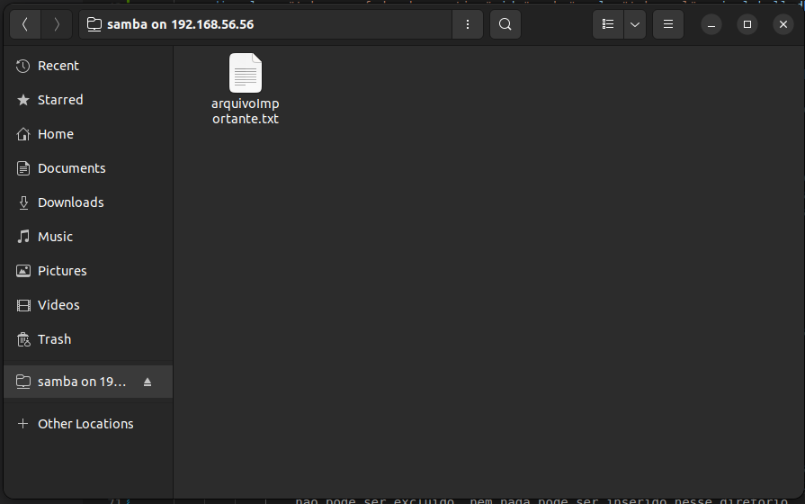
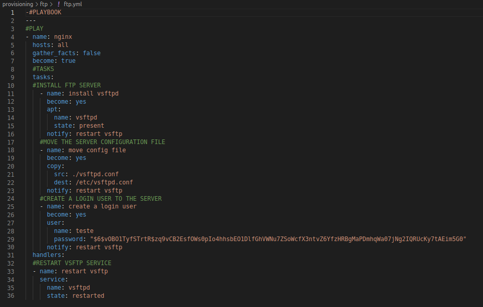
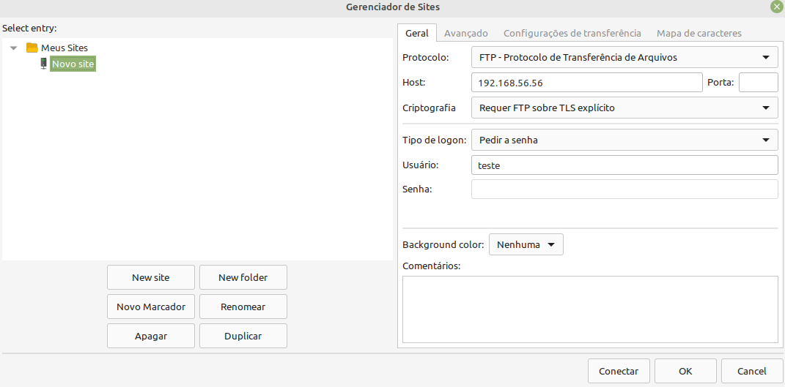

O Samba é um software que tem como principal finalidade o compartilhamento de arquivos de servidores Linux para consumo em computadores Windows. Desta forma, é possível utilizar o Linux como servidor de arquivos, servidor de impressão, entre outros e acessar estas informações através de computadores com Windows.
Nesse trabalho foi provisionado um servidor samba e criado um diretório de compatilhamento de apenas leitura, para simular um diretório onde seriam distribuidos arquivos para funcionários de uma empresa, sendo que esses funcionários não possuem permissão para alterar os conteúdos do diretório. Para isso foi instanciado o servidor samba e compartilhado o diretório "/home/vagrant/samba" do servidor, e esse diretório foi definido como um diretório de apenas leitura. Para acessar esse diretório os seguintes passos devem ser seguidos.
Após conectar-se você terá acessado o diretório compartilhado e terá acesso ao "arquivoImportante.txt" como na imagem abaixo, lembrando que esse diretório é de apenas leitura, portanto esse arquivo não pode ser excluido, nem nada pode ser inserido nesse diretório.
Para visualizar os arquivos de provisionamento acesse esse projeto no github clicando aqui
Um servidor proxy é uma ponte entre você e o resto da internet. Normalmente, ao usar o navegador na internet, você será conectado diretamente ao site acessado. Ao usar um proxy, seu navegador se conecta primeiro a ele, que encaminha seu tráfego ao site. Por isso, os servidores proxy são também conhecidos como “proxies diretos”. Um proxy também recebe a resposta do site e envia de volta a você.
O serviço utilizado nesta server proxy foi o Squid, pois o uso do mesmo como Proxy/Cache é uma das opções mais utilizadas em ambientes corporativos que adotam software livre para administrar a rede, seja através da otimização e melhoria do desempenho da rede atuando como servidor de cache ou como proxy, implementando restrições de acesso à Internet, que nem sempre é possível fazer através do firewall.
Nesse trabalho foi levantado um servidor de proxy que bloqueia sites de busca, para testar o funcionamento do servidor de proxy realize os seguintes passos:
Seguindo esses passos você verificou que o servidor de proxy está configurado e funcionando, não permitindo o acesso a sites de busca, para alterar a lista de sites os quais o servidor de proxy não permite acesso, altere o arquivo "/provisioning/proxy/denyWebsites.lst".
Para visualizar os arquivos de provisionamento acesse esse projeto no github clicando aqui
FTP é a sigla para File Transfer Protocol, um termo que, traduzido para o português, significa Protocolo de Transferência de Arquivos. Ele é basicamente um tipo de conexão que permite a troca de arquivos entre dois computadores conectados à internet. Com isso, você pode enviar qualquer coisa para uma outra máquina ou armazená-los em um servidor FTP, ficando ela sempre disponível para o usuário acessar. Para esse trabalho optamos por utilizar o vsftp. É um serviço simples de transferência de arquivos para sistemas baseados em Unix. O serviço suporta IPv6, TLS e FTPS .
Configuração do Playbook do servidor FTP, este que é chamado pelo Vagrantfile

Utilizamos o serviço do FileZilla para realizarmos a conexão com o servidor: 
Após realizada as configurações no FileZilla, será solicitada a senha e então insira a senha "teste".
Para visualizar os arquivos de provisionamento acesse esse projeto no github clicando aqui
Um firewall é um dispositivo de segurança da rede que monitora o tráfego de rede de entrada e saída e decide permitir ou bloquear tráfegos específicos de acordo com um conjunto definido de regras de segurança. O firewall utilizado nesse trabalho foi o UFW, pois o mesmo já vem instalado em distribuições linux como a utilizada na criação da box desse trabalho a bionic64.
Por ser um firewall que já vem instalado na distribuição linux utilizada, no playbook de provisionamento foi necessário apenas fazer a ativação do firewall. O mesmo foi configurado para liberar acesso a todas as portas definindo a política como "allow" como na imagem abaixo.
Também separadamente há configurada uma play que habilita o tráfego pela porta 80, a porta responsável pelo protocolo http, da forma com que está escrito esse playbook, essa play não tem utilidade, já que a política do firewall já habilita o tráfego na porta 80. Porém essa play foi mantida para permitir que seja feito o teste de funcionamento do firewall. Para testar o firewall execute as ações listadas abaixo:
Para visualizar os arquivos de provisionamento acesse esse projeto no github clicando aqui
Um servidor de email é um serviço de hospedagem de e-mail no qual eles são armazenados. Estes serviços são responsáveis pelo direcionamento de um e-mail de um remetente até seu destinatário.
Neste trabalho, demonstramos o servidor de e-mail sendo colocado para rodar em uma box, como também o a sua utilização:
Realize o acesso o servidor via telnet:
$ telnet localhost 25 no terminal do telnet, insira os comandos para crição e envio do e-mail:
Para verificar o e-mail, acesse através dos comandos:
$ su destinatario
$ mail
Para visualizar os arquivos de provisionamento acesse esse projeto no github clicando aqui
O MySQL é um sistema de gerenciamento de banco de dados (SGBD), que utiliza a linguagem SQL (Linguagem de Consulta Estruturada) como interface. É atualmente um dos sistemas de gerenciamento de bancos de dados mais populares da Oracle Corporation, com mais de 10 milhões de instalações pelo mundo.
Nesse trabalho o SGBD MySQL foi instalado na box utilizando o vagrant com o provisionador ansible, foi configurada a senha "password" para o usuário root e criado um banco de dados chamado "test". O ansible pode ser utilizado para provisionar um banco de dados e carregar informações para o mesmo através de um arquivo de dump, porém para testes não foi adicionado nenhum dado no banco test.
Para validar o funcionamento do banco de dados MySQL siga os seguintes passos:
Feito isso você estará conectado no shell do MySQL e poderá utilizar os comandos para acessar o banco de dados teste, importar dados, ou inserir dados manualmente.
Para visualizar os arquivos de provisionamento acesse esse projeto no github clicando aqui